P8105 Final Project: Determinants of Global Violence
My An Huynh, Jeffrey Lin, Soo Min You, Hyun Kim, Malika Top
Motivation
Globally, violence undermines social and economic development, with its impacts being more pronounced in “developing” countries. Communities lacking adequate resources or experiencing systemic inequities are more vulnerable to various health challenges, including violence. Factors that influence health also play a role in shaping violence, which in turn affects determinants such as housing, education, transportation, and economic conditions. This project seeks to explore the factors driving serious assault, sexual violence, and intentional homicide worldwide from 2015 to 2023.
Selected this time frame because it includes significant global events, including the COVID-19 pandemic and various conflicts, which have greatly influenced patterns of violence. Also, even though there are a lot of missing data for year 2023, we decided to include the year because this time period provides insight into the contemporary factors shaping violence worldwide.
Initial Questions
- How can we best predict violence and homicide rates (i.e. what are its indicators)?
- How do rates of indicators compare across global regions and countries?
- How do rates of violence and homicide compare across global and regions and countries?
- What categories of violent are most prevalent?
Data
Source
Since there are many determinants and indicators of violence, we chose the indicators and outcomes that seem most relevant and interesting in exploring violence from the following sources:
- United Nations Development Program (UNDP):
- Human Development Index
- United Nations Office of Drugs and Crime (UNODC)
- Corruption and Economic Crime
- Criminal Justice Personnel
- Human Trafficking
- Intentional Homicide
- Violent and Sexual Crimes
- World Bank
- Gross Domestic Product (GDP)
- Inflation Rate (Measured by Consumer Price Index)
- Unemployment Rate
- World Health Organization (WHO)
- Alcohol Consumption
Intentional homicide, and violent and sexual crimes were chosen as the outcome variable to quantify violence.
- Intentional homicide:
- counting unit: number of homicide victims per 100,000 population
- classification:
- situational context: organized crime, interpersonal (excluding familial/intimate), socio-political
- relationship to perpetrator: intimate partner, family member, friend, colleague, etc.
- mechanism: firearm, weapon, physical force
- Violent and sexual crimes:
- counting unit: number of individual offences per 100,000 population
- classification of offenses:
- rape
- serious assault
- kidnapping
- sexual violence
- NOTE: some countries used other counting unit (a series of offenses to form a case, or multiple cases to form an investigation)
Scraping Method
The datasets were downloaded from the official websites of the sources above. The names of the files were also changed accordingly for clarity and to avoid confusion. For example, the alcohol consumption data file was renamed from “data.csv” to “alcohol_consumption.csv”.
Tidy EDA Data
For EDA, since we are interested in exploring the trends of global violence, we imported and tidied the datasets for our two outcome variables: homicide and violence.
Homicide Dataset
homicide_visual_df =
read_excel(path = "data/unodc/intentional_homicide.xlsx",
skip = 2) |>
janitor::clean_names() |>
filter(unit_of_measurement == "Rate per 100,000 population",
indicator == "Victims of intentional homicide",
category != "Total",
sex != "Total",
between(year, 2015, 2023)) |>
select(country, region, category, sex, year,
homicide_rate = value) |>
mutate(category = str_replace_all(category,
"^Intimate partner or family member.*",
"Intimate partner or family member"),
category = str_replace_all(category,
"^Socio-political homicide.*",
"Socio-political homicide"))
write.csv(homicide_visual_df, file = "./data/homicide_visual.csv")The tidied homicide dataset includes country, region, category of homicide victims, sex, year and victim rate of homicide. The dataset included data for both counts and rates per 100,000 people. Therefore, we filtered to choose rates per 100,000 people since it allows standardization for comparability by adjusting for differences in population size.
Violence Dataset
violence_visual_df =
read_excel(path = "data/unodc/violent_sexual_crime.xlsx",
skip = 2) |>
janitor::clean_names() |>
filter(unit_of_measurement == "Rate per 100,000 population",
between(year, 2015, 2023)) |>
select(country, region, indicator, category, sex, year,
violence_rate = value) |>
mutate(category = str_replace_all(category,
"^Sexual violence.*",
"Sexual violence"))
write.csv(violence_visual_df, file = "./data/violence_visual.csv")The tidied violence dataset includes country, region, indicator, category of violence, sex, year and violence rate. The indicator includes different rates for violence (violent offences and victims) which are explored further in EDA. Rates per 100,000 people were chosen also for this dataset for comparability.
Tidy Regression Data
For regression, the datasets for all the chosen predictors and outcomes are tidied and merged for modeling process and analysis.
Function to Tidy Datasets
tidy_df = function(data, variable, pivot = FALSE, average = FALSE) {
if(pivot) {
data = data |>
pivot_longer(cols = -iso3_code,
names_to = "year",
values_to = variable) |>
janitor::clean_names()
}
data = data |>
mutate(year = as.numeric(year),
iso3_code = str_replace_all(iso3_code, "^GBR.*", "GBR"),
iso3_code = str_replace_all(iso3_code, "^IRQ.*", "IRQ"),
country = countrycode(iso3_code, origin = "iso3c",
destination = "country.name",
nomatch = NA, warn = FALSE)) |>
drop_na(country)
if(average) {
if("region" %in% colnames(data)) {
data = data |>
group_by( country, region, year) |>
summarize(!!variable := mean(value))
}
else {
data = data |>
group_by(country, year) |>
summarize(!!variable := mean(value))
}
}
return(data)
}We defined a function tidy_df()to pipe after importing
each dataset to automatically tidy the datasets. The
countrycode() function standardizes the country names of
each dataset since some of the country names are represented
inconsistently across dataset files. For example, South Korea was
represented as “Korea (Republic of)” and “Korea, Rep.”
Moreover, for the countrycode() function, NA is returned if no
matches are found and warnings are also suppressed by
nomatch = NA and warn = FALSE respectively
since some datasets include iso3 codes for entities that are not
countries. For example, EUU represents the European Union; however, the
countrycode() function only recognizes iso3 codes for
countries and returns a warning, but we are interested in countries and
regions. A boolean parameter called pivot was included to
indicate if a dataset needs to be pivoted and subsequently perform
pivot_longer(), since some datasets had years organized as
different columns, where each column represented values for that
year.
Also, some of the datasets include rates for different categories.
For example, the data for economic crime includes crime rates for fraud,
burglary and more. Therefore, another boolean parameter called
average was included to pass an option to group by and
summarize rates across categories and genders of different datasets, in
order to provide a standardized measure and reduce complexity for
analysis.
Economic Determinants
gdp_df =
read_excel(path = "data/worldbank/gdp.xls",
sheet = "Data", skip = 3, na = "") |>
select(iso3_code = 2, "2015":"2023") |>
tidy_df("gdp", pivot = TRUE)
inflation_df =
read_excel(path = "data/worldbank/inflation_rate.xls",
sheet = "Data", skip = 3, na = "") |>
select(iso3_code = 2, "2015":"2023") |>
tidy_df("inflation_rate", pivot = TRUE)
unemployment_df =
read_excel(path = "data/worldbank/unemployment_rate.xlsx",
range = "A1:BP437", na = "..") |>
rename_with(str_replace_all, pattern = " \\[.*", replacement = "") |>
select(iso3_code = 4, "2013":"2023") |>
tidy_df("unemployment_rate", pivot = TRUE)
human_develop_df =
read_csv(file = "data/undp/human_development_index.csv", na = "") |>
head(-11) |>
rename_with(str_replace_all, pattern = "hdi_", replacement = "") |>
select(iso3_code = 1, "2015":"2022") |>
tidy_df("hdi", pivot = TRUE)The following variables were identified as economic prdictors of violence:
gdpinflationunemploymenthuman development index
The pivot parameter of the tidy_df()
function was set to true for these datasets, since all of them had the
different years as data columns, which needs to be pivoted
accordingly.
Outcomes of Violence
homicide_df =
read_excel(path = "data/unodc/intentional_homicide.xlsx", skip = 2) |>
janitor::clean_names() |>
filter(indicator == "Victims of intentional homicide",
unit_of_measurement == "Rate per 100,000 population",
dimension == "Total",
sex == "Total",
age == "Total") |>
tidy_df("homicide_rate", average = TRUE)
violence_df =
read_excel(path = "data/unodc/violent_sexual_crime.xlsx", skip = 2) |>
janitor::clean_names() |>
filter(indicator == "Violent offences",
unit_of_measurement == "Rate per 100,000 population") |>
tidy_df("violence_rate", average = TRUE)Unlike the tidied dataset for EDA, the datasets for homicide and violence had their respective rates averaged across category, since we are interested in the average rates of homicide victims and violent offences for regression analysis.
Merge Datasets
merged_violence_df =
left_join(homicide_df, violence_df) |>
left_join(gdp_df) |>
left_join(inflation_df) |>
left_join(unemployment_df) |>
left_join(human_develop_df) |>
left_join(econ_crime_df) |>
left_join(personnel_df) |>
left_join(trafficking_df) |>
left_join(alcohol_df) |>
mutate(country = as.factor(country),
region = as.factor(region)) |>
filter(between(year, 2015, 2023)) |>
relocate(iso3_code) |>
drop_na(violence_rate, homicide_rate)
head(merged_violence_df)## # A tibble: 6 × 14
## # Groups: country, region [1]
## iso3_code country region year homicide_rate violence_rate gdp
## <chr> <fct> <fct> <dbl> <dbl> <dbl> <dbl>
## 1 ALB Albania Europe 2015 2.22 5.51 11386853113.
## 2 ALB Albania Europe 2016 2.74 4.87 11861199831.
## 3 ALB Albania Europe 2017 2.01 4.64 13019726212.
## 4 ALB Albania Europe 2018 2.29 4.54 15156424015.
## 5 ALB Albania Europe 2019 2.26 5.09 15401826127.
## 6 ALB Albania Europe 2020 2.13 4.71 15162734205.
## # ℹ 7 more variables: inflation_rate <dbl>, unemployment_rate <dbl>, hdi <dbl>,
## # economic_crime_rate <dbl>, personnel_rate <dbl>, trafficked_victims <dbl>,
## # alcohol_consumption_rate <dbl>write.csv(merged_violence_df, file = "./data/merged_violence.csv")The final merged dataset includes 771 rows and 14 columns, including iso3 codes, country, region, year, homicide rate, average violence offence rate, gdp, inflation rate, unemployment rate, average crime rate, criminal justice personnel rate, total, human trafficking rate and alcohol consumption rate as variables. There is a total of 127 distinct countries.
After merging the datasets, country and region were converted to
categorical variables and the dataset was filtered for the years between
2015 and 2023, the period of our interest for analysis. Although the
datasets were merged with matching country names tidied by the
countrycode(), the iso3 codes were retained, since they are
required for plotting maps which can be found under the shiny section of
this website.
Exploratory Data Analysis
Homicide Victims
Global Trends of Homicide Victims
homicide_visual_df |>
group_by(region, sex, year) |>
summarize(avg_homicide_rate = mean(homicide_rate)) |>
ggplot(aes(y = avg_homicide_rate, x = year, color = sex)) +
geom_smooth(se = FALSE) +
facet_grid(~region) +
theme(axis.text.x = element_text(angle = 45, hjust = 1)) +
labs(x = "Year",
y = "Average Rate of Homicide Victims",
title = "Homicide Victims Worldwide")The Americas and Asia have significantly higher average homicide rate across years for male victims compared to the other regions. The average homicide rate between genders are not significant for Africa, Asia and Oceania.
Comparing the Americas and Asia
homicide_visual_df |>
filter(region %in% c("Asia", "Americas")) |>
group_by(category, region) |>
summarize(avg_homicide_rate = mean(homicide_rate)) |>
ggplot(aes(y = avg_homicide_rate, x = region,
fill = reorder(category, avg_homicide_rate))) +
geom_col(position = "dodge", bin = 3.0) +
theme(axis.text.x = element_text(angle = 45, hjust = 1)) +
labs(x = "Region",
y = "Average Rate of Homicide Victims",
title = "Homicide in America & Asia",
fill = "Category")
Further exploring homicide in Americas and Asia, the Americas have higher homicide rates for most categories compared to Asia. Homicides of perpetrator to victim relationship unknown has the largest homicide rate. Homicides of unknown types is next category with the highest homicide rate in the Americas.
On the other hand, Asia has a significantly high homicide rate in socio-political homicide compared to the other categories,suggesting high casualties as a result of socio-political activities for countries in Asia. The other categories have a homicide rate lesser than 5 percent.
Breakdown of Homicide
homicide_visual_df |>
group_by(category, year) |>
summarize(avg_homicide_rate = mean(homicide_rate)) |>
ggplot(aes(y = avg_homicide_rate, x = as.factor(year), fill =
reorder(category, avg_homicide_rate))) +
geom_bar(stat = "identity") +
labs(title = "Distribution of Homicide by Category",
x = "Year",
y = "Total Rate of Homicide Victims",
fill = "Category")
Homicides of unknown types and perpetrator to victim relationship unknown are two highest proportions in the total homicide rate, indicating most homicides are committed by strangers or have no connection with the victims. Also, we can observe that homicide rates as a result of organized criminal groups or gangs and interpersonal homicide are the next significant proportions in homicide. The total homicide rate increases sharply from 2015 to 2017 compared to the other years possibly due to socioeconomic factors, such as economic instability.
Violence: Offences & Victims
Global Trends of Violent Offences
violence_visual_df |>
filter(indicator == "Violent offences") |>
group_by(category, year, region) |>
summarise(grp_mean_rate = mean(violence_rate)) |>
ggplot(aes(x = year, y = grp_mean_rate, color = category)) +
geom_line() +
facet_wrap(~region, ncol=2) +
theme(axis.text.x = element_text(angle = 45, hjust = 1),
legend.position = "bottom") +
labs(title = "Violent Offences Worldwide",
x = "Year",
y = "Average Rate of Violent Offences") +
guides(color = guide_legend(nrow = 3))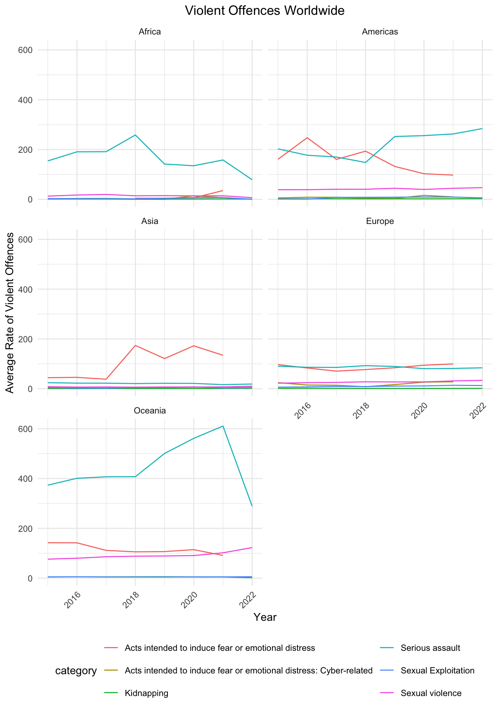
Africa’s most common violent offence category was serious assault, with the Americas trading off between serious assault and acts intended to induce fear or emotional distress. From 2015-2021 Oceania clearly has the highest rates of serious assault, but it drops severely in 2022.
Exploring Violent Offences
violence_visual_df |>
filter(indicator == "Violent offences") |>
group_by(category, year, region) |>
summarise(avg_violence_rate = mean(violence_rate)) |>
mutate(category = fct_reorder(category, avg_violence_rate)) |>
ggplot(aes(x = category, y = avg_violence_rate, fill = region)) +
geom_bar(stat = "identity", position = "dodge") +
facet_wrap(~year, ncol=2) +
theme(axis.text.x = element_text(angle = 80, hjust = 1),
legend.position = "bottom") +
labs(x = "Category",
y = "Average Rate of Violent Offences",
title = "Violent Offences by Category Across Time") 
The plot above shows similar trends to the line graph above, but allows us to compare more closely the rates for categories that are less visible such as sexual violence, where Oceania appears to have the highest rates of as well. We see more clearly that with Oceania’s drop in serious assaults in 2022, Americas and Oceania have similar trends.
Victims of Sexual Violence
Even in 2024, it is still ever-important to discuss sexual violence crimes. Violence against women is a public health issue and any type of sexual violence is a violation of human rights, harming physical, mental, sexual, and reproductive health. We are interested in seeing more specifically trends in sexual violence across the years for regions with sufficient data.
violence_visual_df |>
filter(indicator == "Victims of sexual violence",
region != "Africa") |>
group_by(region, sex, year) |>
summarize(avg_victim_rate = mean(violence_rate)) |>
ggplot(aes(y = avg_victim_rate, x = year, color = sex)) +
geom_smooth(se = FALSE) +
facet_grid(~region) +
theme(axis.text.x = element_text(angle = 45, hjust = 1)) +
labs(x = "Year",
y = "Average Rate of Sexual Violence Victims",
title = "Sexual Violence Worldwide")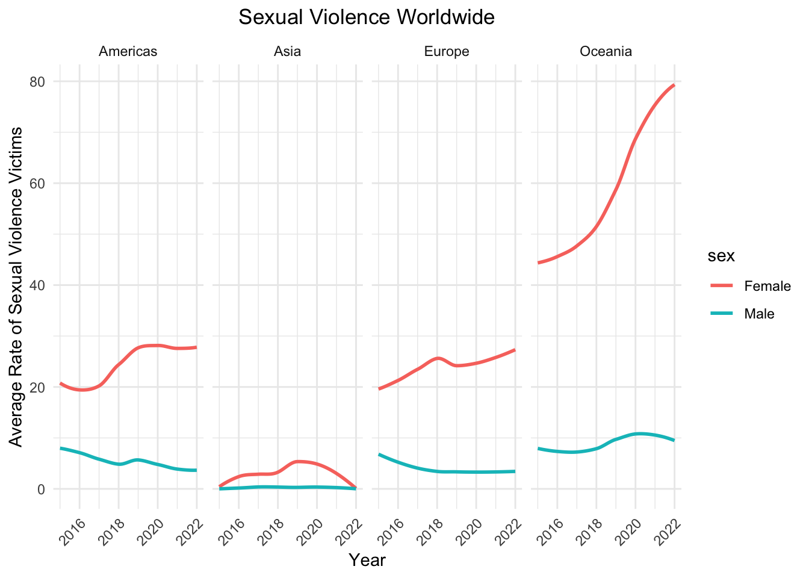
When exploring victim rate of sexual violence, we can see that in overall, there is a higher average victim rate for females; the largest disparity in victim rate between the genders can be observed in Oceania, where the rate for females have been sharply increasing over the years. The victim rate for the Americas and Europe has also been increasing, but steadily compared to Oceania over the years, while Asia has experienced a decline from 2019. Africa was not included because the data was either very small or missing for many countries in the region.
Investigating Sexual Violence
violence_visual_df |>
filter(indicator == "Victims of sexual violence",
region != "Africa") |>
group_by(category, sex, region) |>
summarize(avg_victim_rate = mean(violence_rate)) |>
ggplot(aes(y = avg_victim_rate, x = region,
fill = reorder(category, avg_victim_rate))) +
geom_col(position = "dodge") +
theme(axis.text.x = element_text(angle = 45, hjust = 1)) +
labs(x = "Region",
y = "Average Rate of Sexual Violence Victims",
fill = "Category",
title = "Sexual Violence By Category Across Region")
Further exploring victims of sexual violence, except for perpetrator unknown to the victim, Oceania has a higher average victim rate of sexual violence for the all other categories compared to the other regions. Oceania, Europe and Americas have relationship of perpetrator is not known as the highest category for victim rate. Similar to homicide, the perpetrators are strangers or have no connection with the victims for most sexual violence. On the other hand, Asia has a significantly low average victim rate, having other perpetrator known to the victim as the category with the highest rate.
Breakdown of Sexual Violence
violence_visual_df |>
filter(indicator == "Victims of sexual violence",
region != "Africa") |>
group_by(category, year) |>
summarize(avg_victim_rate = mean(violence_rate)) |>
ggplot(aes(y = avg_victim_rate, x = as.factor(year),
fill = reorder(category, avg_victim_rate))) +
geom_bar(stat = "identity") +
labs(x = "Year",
y = "Total Rate of Sexual Violence Victims",
title = "Distribution of Sexual Violence by Category",
fill = "Category")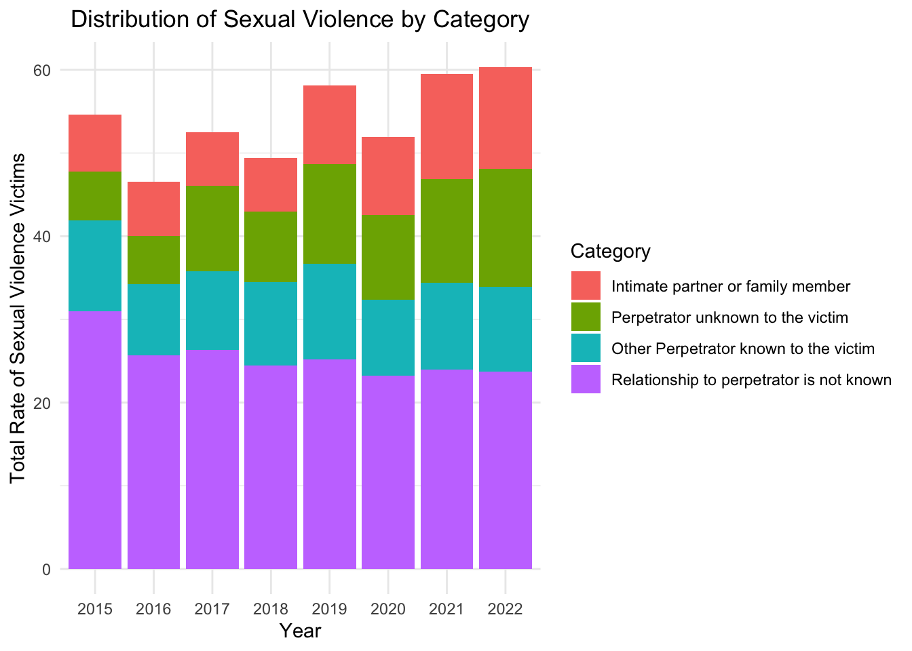
Relationship to perpetrator is not known in the category with a significant proportion to total victim rate of sexual violence compared to the other categories across the years. The proportion of victim rates for the other three categories become approximately equal to each other from 2019. Specifically, the proportion for intimate partner or family member and perpetrator unknown to the victim increases over time.
Global Prevalence of Violence
Across the time period from 2015 to 2023, the Americas consistently exhibited a significantly higher homicide rate compared to other regions. The difference in this region is pronounced, indicating a persistent and widespread issue with violent crime. The homicide rate in Asia is also notable. There was a rising trend in homicide rate from 2015 to 2021, but was followed by a sharp decrease in 2022. However, it should be noted that not all countries that reported homicide rate also reported the violence rate.
The drop in 2022 may imply that there was a potential shift or improvement in the region, but it could also mean that there are some missing data in that year, leading a bias or misinterpretation. When examining violence rates, the Americas followed a similar trend to the homicide rate, with rates significantly higher than the other regions. This trend reflects the persistent issue of violence in the region, affecting not only homicide rates but also broader forms of violence. However, Oceania presented an extreme outlier in terms of victim rates of sexual violence, surpassing even the Americas.
Putting these results against our own knowledge, Oceania’s rates seem higher than expected. This raises the question of if higher rates mean more violent countries or countries who just have reported more crimes. It is very important to address that these outcome data are compiled by UNODC but the data itself comes from each nation’s respective administrative registers, often managed by law enforcement agencies. Additionally, UNODC comes by this data not through requirement but by the United Nations Survey of Crime Trends and Operations of Criminal Justice Systems (UN-CTS). This means that countries voluntarily supply their information. However, a safety-guard is that UNODC does check for consistency and coherence with other data sources.
Regression
Background
Our motivation for doing regression is to determine the significant predictors of the two measures of violence: (1) homicide rate and (2) violence rate.
Violence is a complex and multifaceted issue, especially when considered in a global context. To better understand its various dimensions, we aimed to include a diverse set of predictors that reflect different underlying factors driving violence. Specifically, economic indicators like GDP, inflation rate, and the Human Development Index (HDI) capture aspects of economic inequality, which can influence social unrest and violence. Economic crime rate, personnel rate, and number of trafficked victims serve as indicators of the level of criminal activity in a country, as well as potential efficacy of law enforcement. Such indicators could be predictive of violence in the country. Lastly, alcohol rate is included to address the possibility that substance usage could influence the occurrence of violence.
Given the plausible theoretical linkage between each of our included predictor variables and the outcome variables of interest, we seek to develop models that can determine which factors are most predictive of homicide and violence rate.
We performed this analysis to uncover the extent to which different factors influence homicide rate and violence rate as outcomes.
Functions for Fitting Data
Best_subset
best_subset = function(predictor, outcome, criterion) {
optimal_subset <-
leaps(x = predictor, y = outcome, nbest = 3,
method = criterion, names = names(predictor))
if (criterion == "Cp") {
optimal_criterion <- optimal_subset[[criterion]] %>% min()
optimal_subset_idx <- optimal_subset[[criterion]] %>% which.min()
} else {
optimal_criterion <- optimal_subset[[criterion]] %>% max()
optimal_subset_idx <- optimal_subset[[criterion]] %>% which.max()
}
return(list(Criterion = optimal_criterion ,
Variable_Selection = optimal_subset$which[optimal_subset_idx,]))
}This function serves as a wrapper around the leaps function. It performs best-subset variable selection and then prints out the optimal model diagnostic and the predictor variables included in the regression model.
fit_glmnet
fit_glmnet = function(df, alpha, outcome, lambda) {
outcome_formula <- as.formula(paste(outcome, "~."))
predictor <- model.matrix(outcome_formula, data = df)[,-1]
predicted <- df %>% pull(outcome)
model_fit <-
glmnet(predictor, predicted, lambda = lambda, alpha = alpha)
model_cv <-
cv.glmnet(predictor, predicted, lambda = lambda, alpha = alpha)
lambda_opt = model_cv[["lambda.min"]]
model_fit <-
glmnet(predictor, predicted, lambda = lambda_opt, alpha = alpha)
return(model_fit)
}This function serves as a wrapper for the glmnet fitting processing and covers both the fitting and cross-validation process. It returns the glmnet object produced after fitting with optimal lambda value.
rmse_glmnet
rmse_glmnet = function(model, test, outcome) {
outcome_formula <- as.formula(paste(outcome, "~."))
predictor <- model.matrix(outcome_formula, data = test)[,-1]
predictions <- predict.glmnet(model, model[["lambda"]], newx = predictor,
type = "response")
predictions <- as.vector(predictions)
observed <- test %>%
pull(outcome)
return(caret::RMSE(predictions, observed))
}This is a wrapper function for the glmnet prediction and evaluation process. Given a fitted glmnet model, a test dataset, and an outcome variable of interest, this function predicts the avlues in the test dataset and then calculates and returns the rmse.
check_model
check_model = function(data, name) {
diagnostics = list()
resid_fit =
data |>
ggplot(aes(y = resid, x = pred)) +
geom_point() +
geom_smooth(method = "lm") +
labs(title = name,
y = "Residual",
x = "Fitted Value")
qqplot =
data |>
filter(is.finite(resid)) |>
ggplot(aes(sample = resid)) +
stat_qq() +
stat_qq_line(col = "red") +
xlab("Theoretical Quantiles") +
ylab("Residuals") +
ggtitle(name)
qqnorm(pull(data, resid), main = "QQ Plot of Residuals")
qqline(pull(data, resid), col = "red")
diagnostics = append(diagnostics, list(qqplot, resid_fit))
patchwork::wrap_plots(diagnostics)
}This is a plotting function to combine several different plot types that assess the assumptions of linear models
Descriptive Statistics
Visualizations of Distributions
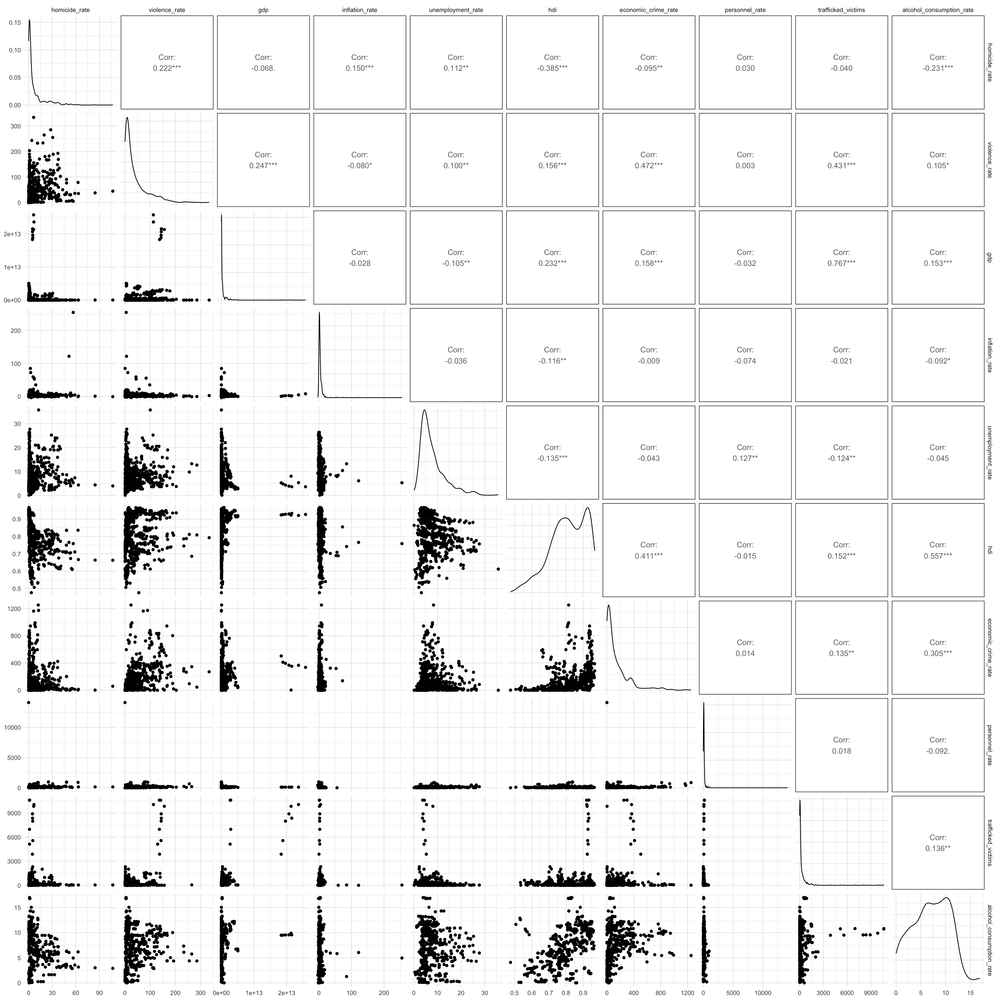
Distribution of all variables were checked and it was found that they are all right-skewed, except for human development index. HDI variable showed bimodal and slightly left-skewed distribution. Hence, we decided to apply ln transformations and Box-Cox transformations to these variables in order to account for concerns regarding the constancy of variance in linear models. Transformations are intended to approximately normalize the data.
Data Transformations
Natural Log Transform
ln_transform = function(value) {
return(log(abs(value)))
}
ln_df =
merged_violence_df |>
mutate(across(c(homicide_rate:alcohol_consumption_rate),
ln_transform))
ln_df |>
select(homicide_rate:alcohol_consumption_rate) |>
ggpairs()
Box-Cox Transform
boxcox_transform = function(value) {
if (all(is.na(value))) {
return(value)
}
min_value = min(value, na.rm = TRUE)
if (min_value <= 0) {
value = value + abs(min_value) + 0.00001
}
if (length(unique(value)) == 1) {
return(value)
}
boxcox_result = MASS::boxcox(value ~ 1, plotit = FALSE)
lambda = boxcox_result$x[which.max(boxcox_result$y)]
if(lambda != 0) {
transformed_value = (value^lambda - 1) / lambda
} else {
transformed_value = log(value)
}
return(transformed_value)
}
boxcox_df = merged_violence_df |>
mutate(across(c(homicide_rate:alcohol_consumption_rate),
~ boxcox_transform(.)))
boxcox_df |>
select(homicide_rate:alcohol_consumption_rate) |>
ggpairs()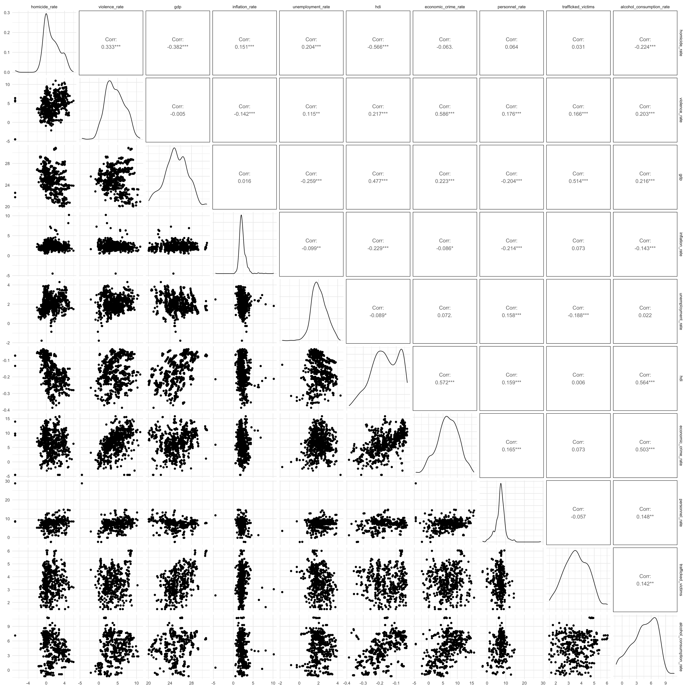
Though the transformations were expected to improve the normality, the results suggest that the transformations are not necessarily effective. In fact, we found that the original data already provides a reasonable representation of the underlying distribution.
While the natural logarithm helped with normality, the Box-Cox transformation did not substantially improve the data’s distribution. Box-Cox transformation requires shifting data to be strictly positive, which could introduce unnecessary complexity.
Since neither transformation substantially approved the shapes of the distributions, we ultimately decided to use the original data. Concerns regarding the normality of the distributions are alleviated by the Central Limit Theorem. With a sufficiently large amount of data points, we can assume that the sampling distribution is approximately normal. Using the convention that n > 30 allows for the assumption of approximate normality, our 310 observation dataset suffices to be supported by Central Limit Theorem (CLT).
Multicolliniearity Diagnostics
We used cor() to find the correlation between the eight
predictors of homicide rate and violence.
cor_matrix =
cor(merged_violence_df[, c("gdp", "inflation_rate", "unemployment_rate", "hdi",
"economic_crime_rate", "personnel_rate", "trafficked_victims",
"alcohol_consumption_rate")], use = "pairwise.complete.obs")
ggcorrplot(cor_matrix,
method = "circle",
type = "lower",
lab = TRUE,
lab_size = 3,
colors = c("blue", "white", "red"), # Color scale (blue = negative, red = positive)
title = "Correlation Heatmap"
)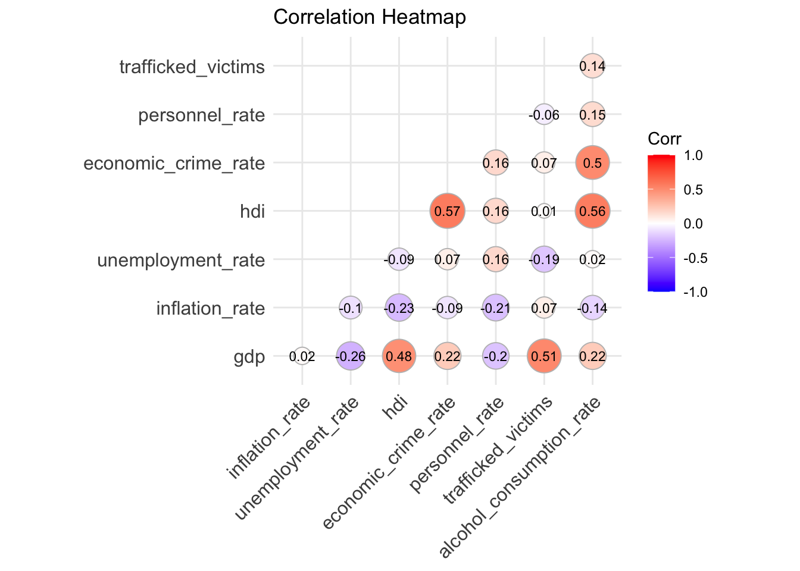
There is moderate correlation between hdi and
alcohol_consumption_rate, corr = 0.56, and moderately high
correlation between trafficked_victims and
gdp, corr = 0.77.
Data Pre-Processing
Define Lambda Range
lambda = 10^(seq(-2, 2.75, 0.1))Approach to Pre-Processing Data
Prior to performing any model fitting, we split our intial dataset into separate homicide and violence datasets, each of which includes the outcome variable and all numeric predictor variables. Specific predictor and outcome dataframes, and an outcome matrix, are created for later use in linear models, as well as lasso.
Pre-Processing for Homicide
homicide_df =
merged_violence_df |>
ungroup() |>
select(
homicide_rate, everything(), -violence_rate, -year, -country, -region,
-iso3_code) |>
drop_na()
homicide_matrix <- model.matrix(homicide_rate ~., data = homicide_df)[,-1]
homicide_predictors <- homicide_df %>%
select(-homicide_rate)
homicide_outcome <- homicide_df %>%
pull(homicide_rate)Pre-Processing for Violence
violence_df =
merged_violence_df |>
ungroup() |>
select(
violence_rate, everything(), -year, -homicide_rate, -country, -region,
-iso3_code) |>
drop_na()
violence_matrix <- model.matrix(violence_rate ~., data = violence_df)[,-1]
violence_predictors <- violence_df %>%
select(-violence_rate)
violence_outcome <- violence_df %>%
pull(violence_rate)Baseline MLR with Additive Effects
First, we decided to fit a baseline MLR with additive effects from all possible predictor variables to use as a point of reference for our modeling process. This step provides basic understanding of the extent to which different covariates contribute to the outcomes of interest.
Predict Homicide Rates
baseline_MLR_hom <- lm(homicide_rate ~ gdp + inflation_rate + unemployment_rate +
hdi + economic_crime_rate + personnel_rate + trafficked_victims +
alcohol_consumption_rate , data = merged_violence_df)
baseline_MLR_hom_fitted <- baseline_MLR_hom[["fitted.values"]]
baseline_MLR_hom %>%
broom::tidy() %>%
knitr::kable()| term | estimate | std.error | statistic | p.value |
|---|---|---|---|---|
| (Intercept) | 77.1223904 | 6.8949976 | 11.1852672 | 0.0000000 |
| gdp | 0.0000000 | 0.0000000 | 1.4401126 | 0.1508748 |
| inflation_rate | -0.7310164 | 0.1997345 | -3.6599403 | 0.0002978 |
| unemployment_rate | -0.3801340 | 0.1437800 | -2.6438594 | 0.0086262 |
| hdi | -79.7616365 | 9.3579304 | -8.5234270 | 0.0000000 |
| economic_crime_rate | 0.0047858 | 0.0037406 | 1.2793927 | 0.2017441 |
| personnel_rate | 0.0090816 | 0.0064515 | 1.4076778 | 0.1602584 |
| trafficked_victims | -0.0004297 | 0.0005839 | -0.7358718 | 0.4623817 |
| alcohol_consumption_rate | -0.2165605 | 0.2052374 | -1.0551708 | 0.2921934 |
Results from baseline MLR show that that inflation rate, unemployment rate and hdi are significant predictors of homicide rate at alpha = 0.05.
Collinearity of Baseline Homicide Model
vif_baseline_hom_MLR <- car::vif(baseline_MLR_hom)
vif_baseline_hom_MLR %>%
tibble(
variable = names(vif_baseline_hom_MLR),
VIF = vif_baseline_hom_MLR
) %>%
select(variable, VIF) %>%
knitr::kable()| variable | VIF |
|---|---|
| gdp | 2.396884 |
| inflation_rate | 1.176607 |
| unemployment_rate | 1.164411 |
| hdi | 2.455203 |
| economic_crime_rate | 1.700020 |
| personnel_rate | 1.306548 |
| trafficked_victims | 2.315171 |
| alcohol_consumption_rate | 1.896571 |
Results from VIF show that there is no multicollinearity issue (VIF < 5).
Predict Violence Rates
baseline_MLR_viol <- lm(violence_rate ~ gdp + inflation_rate + unemployment_rate +
hdi + economic_crime_rate + personnel_rate + trafficked_victims +
alcohol_consumption_rate , data = merged_violence_df)
baseline_MLR_viol_fitted <- baseline_MLR_viol[["fitted.values"]]
baseline_MLR_viol %>%
broom::tidy() %>%
knitr::kable()| term | estimate | std.error | statistic | p.value |
|---|---|---|---|---|
| (Intercept) | 44.2045930 | 19.9655911 | 2.2140388 | 0.0275754 |
| gdp | 0.0000000 | 0.0000000 | 2.7199674 | 0.0069083 |
| inflation_rate | -2.0163975 | 0.5783639 | -3.4863818 | 0.0005625 |
| unemployment_rate | -0.1171670 | 0.4163384 | -0.2814226 | 0.7785796 |
| hdi | -12.9837171 | 27.0974152 | -0.4791497 | 0.6321801 |
| economic_crime_rate | 0.1193201 | 0.0108316 | 11.0158771 | 0.0000000 |
| personnel_rate | -0.0628082 | 0.0186813 | -3.3620841 | 0.0008735 |
| trafficked_victims | 0.0082359 | 0.0016908 | 4.8709129 | 0.0000018 |
| alcohol_consumption_rate | -1.6323824 | 0.5942983 | -2.7467389 | 0.0063817 |
Results from MLR show that gdp, inflation rate, crime rate, personnel rate, number of trafficked victims per 100,000 and alcohol consumption rates are significant predictors of violence rate at significance level alpha = 0.01.
Collinearity of Baseline Violence Model
vif_baseline_viol_MLR <- car::vif(baseline_MLR_viol)
vif_baseline_viol_MLR %>%
tibble(
variable = names(vif_baseline_viol_MLR),
VIF = vif_baseline_viol_MLR
) %>%
select(variable, VIF) %>%
knitr::kable()| variable | VIF |
|---|---|
| gdp | 2.396884 |
| inflation_rate | 1.176607 |
| unemployment_rate | 1.164411 |
| hdi | 2.455203 |
| economic_crime_rate | 1.700020 |
| personnel_rate | 1.306548 |
| trafficked_victims | 2.315171 |
| alcohol_consumption_rate | 1.896571 |
Results from VIF show that there is no multicollinearity issue (VIF < 5).
Lasso
We used lasso to as a feature selection tool to find the most important variables in predicting homicide rate and violence rate.
Predictors for Violence Rate
lasso_violence_fit =
glmnet(violence_matrix, violence_outcome, lambda = lambda)
lasso_violence_cv =
cv.glmnet(violence_matrix, violence_outcome, lambda = lambda)
lambda_violence_opt =
lasso_violence_cv[["lambda.min"]]
lasso_violence_fit =
glmnet(violence_matrix, violence_outcome, lambda = lambda_violence_opt)
lasso_violence_fit |>
broom::tidy() |>
knitr::kable()| term | step | estimate | lambda | dev.ratio |
|---|---|---|---|---|
| (Intercept) | 1 | 33.2327610 | 0.3981072 | 0.5192427 |
| gdp | 1 | 0.0000000 | 0.3981072 | 0.5192427 |
| inflation_rate | 1 | -1.7615771 | 0.3981072 | 0.5192427 |
| unemployment_rate | 1 | -0.0409621 | 0.3981072 | 0.5192427 |
| hdi | 1 | -1.7103106 | 0.3981072 | 0.5192427 |
| economic_crime_rate | 1 | 0.1133362 | 0.3981072 | 0.5192427 |
| personnel_rate | 1 | -0.0548232 | 0.3981072 | 0.5192427 |
| trafficked_victims | 1 | 0.0080624 | 0.3981072 | 0.5192427 |
| alcohol_consumption_rate | 1 | -1.5437306 | 0.3981072 | 0.5192427 |
lasso_predict_violence <-
predict.glmnet(lasso_violence_fit, lambda_violence_opt,
newx = violence_matrix, type = "response")
lasso_predict_violence <- as.vector(lasso_predict_violence)
lasso_violence_resid <- tibble(
residuals = violence_outcome - lasso_predict_violence
)The optimal lambda for violence rate is 0.3981072. Based on lasso
estimates, the coefficient for gdp was shrunk to 0.
Predictors for Homicide Rate
lasso_homicide_fit =
glmnet(homicide_matrix, homicide_outcome, lambda = lambda)
lasso_homicide_cv =
cv.glmnet(homicide_matrix, homicide_outcome, lambda = lambda)
lambda_homicide_opt =
lasso_homicide_cv[["lambda.min"]]
lasso_homicide_fit =
glmnet(homicide_matrix, homicide_outcome, lambda = lambda_homicide_opt)
lasso_homicide_fit |>
broom::tidy() |>
knitr::kable()| term | step | estimate | lambda | dev.ratio |
|---|---|---|---|---|
| (Intercept) | 1 | 75.5833480 | 0.0630957 | 0.3524531 |
| gdp | 1 | 0.0000000 | 0.0630957 | 0.3524531 |
| inflation_rate | 1 | -0.6907875 | 0.0630957 | 0.3524531 |
| unemployment_rate | 1 | -0.3553263 | 0.0630957 | 0.3524531 |
| hdi | 1 | -78.2143914 | 0.0630957 | 0.3524531 |
| economic_crime_rate | 1 | 0.0043479 | 0.0630957 | 0.3524531 |
| personnel_rate | 1 | 0.0085533 | 0.0630957 | 0.3524531 |
| trafficked_victims | 1 | -0.0002459 | 0.0630957 | 0.3524531 |
| alcohol_consumption_rate | 1 | -0.2056343 | 0.0630957 | 0.3524531 |
lasso_predict_homicide <-
predict.glmnet(lasso_homicide_fit, lambda_homicide_opt,
newx = homicide_matrix, type = "response")
lasso_predict_homicide <- as.vector(lasso_predict_homicide)
lasso_homicide_resid <- tibble(
residuals = homicide_outcome - lasso_predict_homicide
)The optimal lambda for homicide rate is 0.0630957. Similar to the
results from violence, the coefficient for gdp was shrunk
to 0.
Criterion-Based Procedure
Best-Subset Regression for Violence
Predict Violence Rate with R-Squared
violence_best_subset_rsq <-
best_subset(predictor = violence_predictors, outcome = violence_outcome,
criterion = "adjr2")
violence_best_subset_rsq## $Criterion
## [1] 0.5103599
##
## $Variable_Selection
## gdp inflation_rate unemployment_rate
## TRUE TRUE FALSE
## hdi economic_crime_rate personnel_rate
## FALSE TRUE TRUE
## trafficked_victims alcohol_consumption_rate
## TRUE TRUEPredict Violence Rate with Cp
violence_best_subset_Cp <-
best_subset(predictor = violence_predictors, outcome = violence_outcome,
criterion = "Cp")
violence_best_subset_Cp## $Criterion
## [1] 5.363491
##
## $Variable_Selection
## gdp inflation_rate unemployment_rate
## TRUE TRUE FALSE
## hdi economic_crime_rate personnel_rate
## FALSE TRUE TRUE
## trafficked_victims alcohol_consumption_rate
## TRUE TRUECollinearity of Best-Subset Violence Model
subset_violence_lm <- lm(violence_rate ~ gdp + inflation_rate +
economic_crime_rate + personnel_rate + trafficked_victims +
alcohol_consumption_rate, data = violence_df)
subset_violence_fitted <- subset_violence_lm[["fitted.values"]]
vif_subset_violence_model <- car::vif(subset_violence_lm)
vif_subset_violence_model %>%
tibble(
variable = names(vif_subset_violence_model),
VIF = vif_subset_violence_model
) %>%
select(variable, VIF) %>%
knitr::kable()| variable | VIF |
|---|---|
| gdp | 2.346184 |
| inflation_rate | 1.070415 |
| economic_crime_rate | 1.373276 |
| personnel_rate | 1.240083 |
| trafficked_victims | 2.282920 |
| alcohol_consumption_rate | 1.168675 |
All variables have VIF value below 5, suggesting that there is no multi-colinearity concerns.
Interpretation
The results from criterion-based procedures suggest that significant predictors for violence_rate are gdp, inflation_rate, economic_crime_rate, personnel_rate, trafficked_victims and alcohol_consumption rate, with a total of 6 predictors. This yields the most appropriate Cp value (5.363), which is approximately close to the number of predictors, and highest adjusted R-squared (0.510).
Best Subset Regression for Homicide
Predict Homicide Rate with R-Squared
homicide_best_subset_rsq <-
best_subset(predictor = homicide_predictors, outcome = homicide_outcome,
criterion = "adjr2")
homicide_best_subset_rsq## $Criterion
## [1] 0.3367418
##
## $Variable_Selection
## gdp inflation_rate unemployment_rate
## TRUE TRUE TRUE
## hdi economic_crime_rate personnel_rate
## TRUE TRUE TRUE
## trafficked_victims alcohol_consumption_rate
## FALSE TRUEPredict Homicide Rate with Cp
homicide_best_subset_Cp <-
best_subset(predictor = homicide_predictors, outcome = homicide_outcome,
criterion = "Cp")
homicide_best_subset_Cp## $Criterion
## [1] 6.511243
##
## $Variable_Selection
## gdp inflation_rate unemployment_rate
## FALSE TRUE TRUE
## hdi economic_crime_rate personnel_rate
## TRUE TRUE FALSE
## trafficked_victims alcohol_consumption_rate
## FALSE FALSECollinearity of Best-Subset Homicide Model
subset_homicide_lm <- lm(homicide_rate ~ inflation_rate + unemployment_rate +
hdi + economic_crime_rate, data = homicide_df)
subset_homicide_fitted <- subset_homicide_lm[["fitted.values"]]
vif_subset_homicide_model <- car::vif(subset_homicide_lm)
vif_subset_homicide_model %>%
tibble(
variable = names(vif_subset_homicide_model),
VIF = vif_subset_homicide_model
) %>%
select(variable, VIF) %>%
knitr::kable()| variable | VIF |
|---|---|
| inflation_rate | 1.169288 |
| unemployment_rate | 1.034265 |
| hdi | 1.468355 |
| economic_crime_rate | 1.316883 |
All variables have VIF value below 5, suggesting that there is no multi-colinearity concerns.
Interpretation
For homicide_rate, the results are not as straightforward. The best model based on Cp and R-squared seems to be the model with 4 predictors because it has the lowest Cp (6.36), and a relatively high adjusted R-squared (0.331), indicating a good balance between fit and complexity. As more predictors are added, R-squared adjusts slightly but Cp levels off at around 6 predictors. The model with 4 predictors, which includes inflation_rate, unemployment_rate, hdi, personnel_rate, seems to be a better trade-off.
Model Comparison
Create Training and Testing Datasets
cv_df_violence <-
modelr::crossv_mc(violence_df, 100)
cv_df_violence <- cv_df_violence %>%
mutate(
train = map(train, as_tibble),
test = map(test, as_tibble)
)
cv_df_homicide <-
modelr::crossv_mc(homicide_df, 100)
cv_df_homicide <- cv_df_homicide %>%
mutate(
train = map(train, as_tibble),
test = map(test, as_tibble)
)Fit Models
Violence
cv_df_violence <-
cv_df_violence %>%
mutate(
MLR_all_var = map(train, \(df) lm(violence_rate ~ ., data = df)),
MLR_best_subset = map(train, \(df) lm(violence_rate ~ gdp + inflation_rate +
economic_crime_rate + personnel_rate + trafficked_victims +
alcohol_consumption_rate, data = df)),
lasso = map(train, \(df) fit_glmnet(df, outcome = "violence_rate",
alpha = 1,lambda = lambda))
) %>%
mutate(
rmse_all_var = map2_dbl(
MLR_all_var, test, \(mod, test) rmse(model = mod, data = test)),
rmse_best_subset = map2_dbl(
MLR_best_subset, test, \(mod, test) rmse(model = mod, data = test)),
rmse_lasso = map2_dbl(
lasso, test, \(mod, test) rmse_glmnet(mod, test, "violence_rate"))
) %>%
select(starts_with("rmse_"))Homicide
cv_df_homicide <-
cv_df_homicide %>%
mutate(
MLR_all_var = map(train, \(df) lm(homicide_rate ~ ., data = df)),
MLR_best_subset = map(train, \(df) lm(homicide_rate ~ inflation_rate
+ unemployment_rate + hdi + economic_crime_rate, data = df)),
lasso = map(train, \(df) fit_glmnet(df, outcome = "homicide_rate",
alpha = 1,lambda = lambda))
) %>%
mutate(
rmse_all_var = map2_dbl(
MLR_all_var, test, \(mod, test) rmse(model = mod, data = test)),
rmse_best_subset = map2_dbl(
MLR_best_subset, test, \(mod, test) rmse(model = mod, data = test)),
rmse_lasso = map2_dbl(
lasso, test, \(mod, test) rmse_glmnet(mod, test, "homicide_rate"))
) %>%
select(starts_with("rmse_"))Comparing the RMSE
Violence
cv_df_violence %>%
pivot_longer(
everything(),
names_to = "Model",
values_to = "RMSE",
names_prefix = "rmse_"
) %>%
mutate(
Model = fct_inorder(Model)
) %>%
ggplot(aes(x = Model, y = RMSE)) +
geom_violin() +
ggtitle("RMSE by Model for Predicting Violence Rate") +
theme(plot.title = element_text(hjust = 0.5))
Examining the distribution of RMSEs for each of the 3 models for predicting violence rate, we see that they are relatively similar. It appears that the MLR including all predictor variables has greater spread than the other two distributions, as it has a higher upper bound in the violin plot.
The similarity in performance among all 3 models likely relates to the few number of predictor variables that exist in our studied dataset. In general, each of the 3 models will not differ by many predictor variables, and therefore perform similarly. Comparing the 3 models, the best subset regression model may be considered optimal as it reduces model complexity, without the further caveat of difficulty interpreting beta coefficients, as is the case with lasso models.
Homicide
cv_df_homicide %>%
pivot_longer(
everything(),
names_to = "Model",
values_to = "RMSE",
names_prefix = "rmse_"
)%>%
mutate(
Model = fct_inorder(Model)
) %>%
ggplot(aes(x = Model, y = RMSE)) +
geom_violin() +
ggtitle("RMSE by Model for Predicting Homicide Rate") +
theme(plot.title = element_text(hjust = 0.5))
Examining the 3 models we used to predict homicide rate, we see that the distribution of RMSE across 100-fold cross-validation are nearly identical. This is likely in regard to the few predictor variables included in our dataset. In particular, with such few predictor variables, lasso is likely not the most well-suited for this task, as there is not a serious need to reduce model complexity. Consequently, the number of variables included in each of the 3 models is quite similar, and the difference of 1 or 2 included predictors between each of the models does not produce a substantial change in model effectiveness. Comparing the 3 models, the best subset regression model may be considered the best as it reduces model complexity but maintains ease of interpretability of beta coefficients.
Model Diagnostics
All Variables included MLR
baseline_hom_resid_df =
merged_violence_df |>
add_residuals(baseline_MLR_hom) |>
add_predictions(baseline_MLR_hom)
baseline_viol_resid_df =
merged_violence_df |>
add_residuals(baseline_MLR_viol) |>
add_predictions(baseline_MLR_viol)
check_model(baseline_hom_resid_df, "MLR All Predictors Homicide Rate") 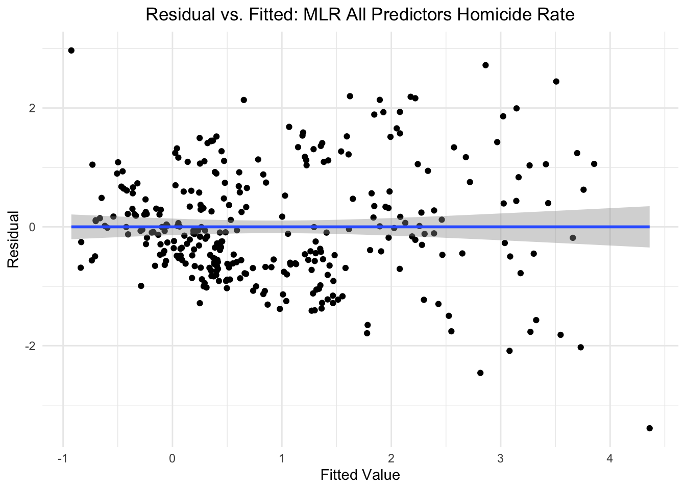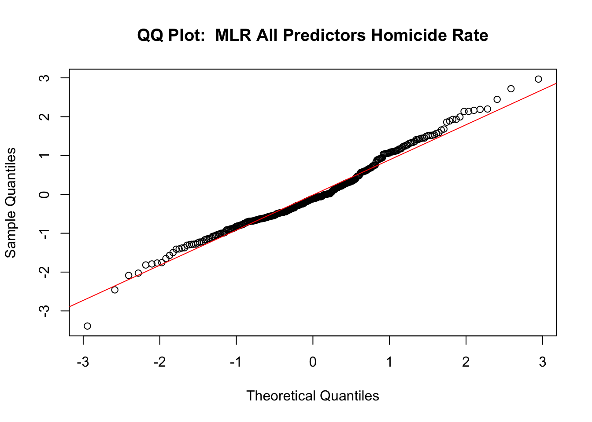
check_model(baseline_viol_resid_df, "MLR All Predictors Violence Rate")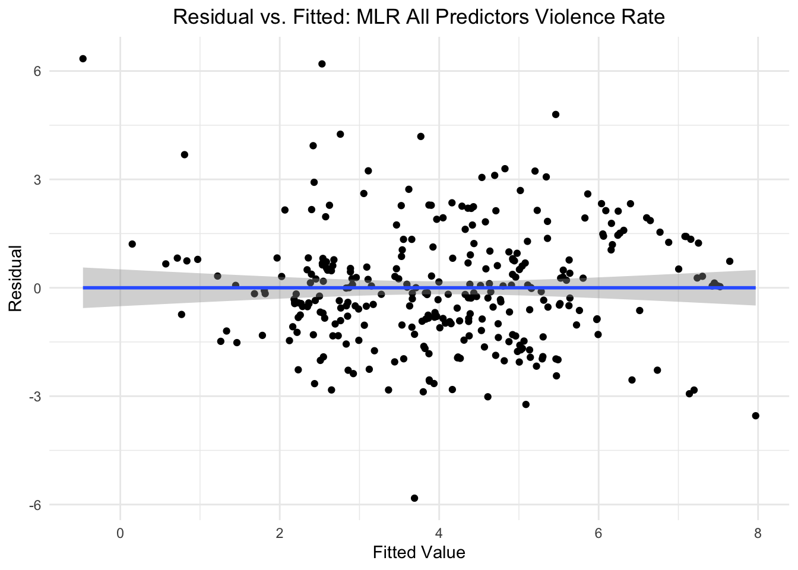 Examining the QQ-plots for the MLRs with all predictor variables
included, we notice that our assumption of normality of residuals may be
in violation, as there appear to many lower-bound and upper-bound
outliers that do not fall along the reference line. Regarding the plots
of fitted values versus residuals, we see differing results based on
whether homicide rate or violence rate is the outcome variable. With
homicide as the outcome variable, we can see residuals oscillate above
and below the reference line, indicating approximate linearity of the
relationship between the predictors and the outcome variables. However,
the greater variability in the residuals as fitted values increase,
suggests that we are seeing heteroscedasticity. Regarding violence rate
as the outcome variable, we see both issues with heteroscedasticity and
linearity.
Examining the QQ-plots for the MLRs with all predictor variables
included, we notice that our assumption of normality of residuals may be
in violation, as there appear to many lower-bound and upper-bound
outliers that do not fall along the reference line. Regarding the plots
of fitted values versus residuals, we see differing results based on
whether homicide rate or violence rate is the outcome variable. With
homicide as the outcome variable, we can see residuals oscillate above
and below the reference line, indicating approximate linearity of the
relationship between the predictors and the outcome variables. However,
the greater variability in the residuals as fitted values increase,
suggests that we are seeing heteroscedasticity. Regarding violence rate
as the outcome variable, we see both issues with heteroscedasticity and
linearity.
Best Subset MLR
subset_homicide_resid_df =
merged_violence_df |>
add_residuals(subset_homicide_lm) |>
add_predictions(subset_homicide_lm)
subset_violence_resid_df =
merged_violence_df |>
add_residuals(subset_violence_lm) |>
add_predictions(subset_violence_lm)
check_model(subset_homicide_resid_df, "MLR Best-Subset Homicide Rate")

check_model(subset_violence_resid_df, "MLR Best-Subset Violence Rate")

Examining the QQ-plots for the MLRs using the best-subset of predictor variables, we once again notice that our assumption of normality of residuals may be in violation, as there appear to many lower-bound and upper-bound outliers that do not fall along the reference line. For the fitted versus residuals plot for homicide rate, we see violations of both linearity and homosecdascity. The equivalent plot for violence rate presents similar concerns regarding homoscedascity, but shows a greater spread of residuals along the horizontal reference line, and therefore better implies linearity of relationship between predictor variables and outcome.
Lasso
lasso_homicide_resid_df =
lasso_homicide_resid |>
pull(residuals) |>
bind_cols(lasso_predict_homicide) |>
rename(resid = "...1", pred = "...2")
lasso_violence_resid_df =
lasso_violence_resid |>
pull(residuals) |>
bind_cols(lasso_predict_violence) |>
rename(resid = "...1", pred = "...2")
check_model(lasso_homicide_resid_df, "Lasso Homicide Rate") 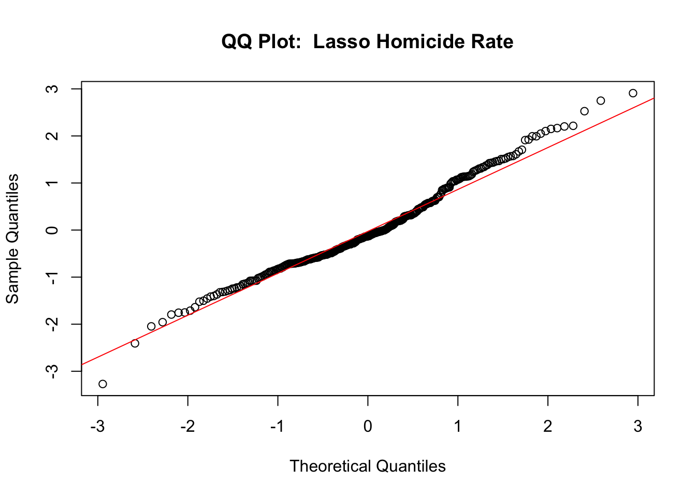
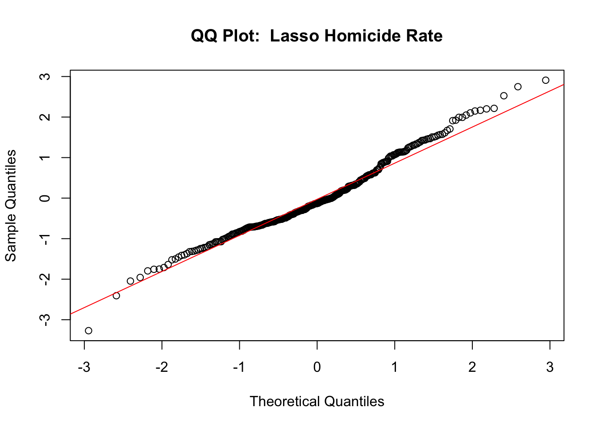
check_model(lasso_violence_resid_df, "Lasso Violence Rate")

Consistent with results from the QQ-plots of the previous two MLR models, lasso models for both homicide rate and violence rate show potential violations of the assumption of normality, as many lower-bound and upper-bound outlier residuals do not fall along the reference line. For the fitted versus residuals plot of homicide rate, we see possible heteroscedascity, while the equivalent plot for homicide rate shows both possible heteroscedascity and non-linearity.
Conclusion
Based on our comparisons of RMSE, we can conclude that our best-subset regression models are most accurate at predicting the outcomes: (1) Violence Rate and (2) Homicide Rate.
The best-subset regression model for predicting violence rate yielded an adjusted r-squared of and included the following variables a predictors: GDP, inflation rate, crime rate, personnel rate, trafficked victims, and alcohol consumption rate. The best-subset regression model for predicting homicide rate returned an r-squared of . The variables included in this model were inflation rate, unemployment rate, HDI, and crime rate.
Despite moderately high R-squared values for each of these models, we must acknowledge that the models’ performance and accuracy may suffer from certain drawbacks. In particular, model diagnostics revealed concerns regarding the normality, linearity, and homoscedascity of the dataset used to produce these models. Additionally, transformations applied to cope with the concerns regarding normality failed to produce more normalized distributions for any of the predictor variables. As a result, the R-squared values for our models may be inaccurate and different forms of modelling, such as a non-linear approach, may be better suited for exploring what variables predict violence and homicide rates.
Citation
- UNODC (2024), UNODC Research - Data Portal – Access and functioning of justice. https://dataunodc.un.org/dp-cjs-persons-convicted (Accessed on Nov. 2024).
- UNODC (2024), UNODC Research - Data Portal – Corruption and Economic Crime. https://dataunodc.un.org/dp-crime-corruption-offences (Accessed on Nov. 2024).
- UNODC (2024), UNODC Research - Data Portal - Violent and Sexual Crime. https://dataunodc.un.org/dp-crime-violent-offences (Accessed on Nov. 2024)
Social Determinants
The following variables were identified as social prdictors of violence:
economic crimecriminal justice personnelhuman traffickingalcoholThe datasets for economic crimes and criminal justice personnel also provided data for both counts and rates per 100,000 people. Subsequently, we filtered to choose rates per 100,000 people for standardization and comparability. The human trafficking dataset provided data for number of human trafficking victims, instead of trafficking rates; the dataset also included a category for total number of trafficking victims, so the data was filtered for total category and neither the
pivotnoraverageoptions were set to true in thetidy_df()function.